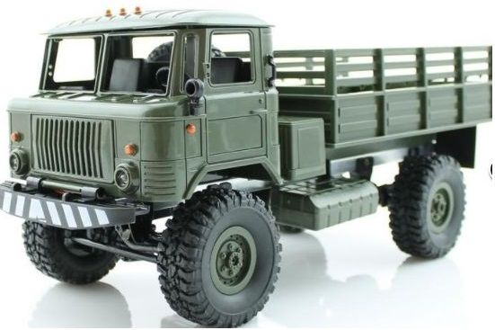

|  |
|
Источник: https://ru.wikipedia.org/wiki/ГАЗ-66 ГАЗ-66 (простореч. название: "шишига" или "шишарик") — советский и российский грузовой автомобиль повышенной проходимости с колёсной формулой 4 × 4, грузоподъёмностью 2,0 тонны и кабиной над двигателем. Наиболее массовый полноприводный двухосный грузовик в Советской Армии ВС СССР. Использовался также и в народном хозяйстве СССР, России. Разработан и выпускался на Горьковском автомобильном заводе с 1964 по 1999 год, имеет большое количество модификаций и специальных машин, выполненных на их базе. В народе получил прозвания «Шишига» и «Шишка» по созвучию с номером 66. Всего был выпущен 965 941 экземпляр. Главный конструктор — А. Д. Просвирнин, ведущий конструктор — Р. Г. Заворотный[1]. Авторы дизайн-проекта Л. М. Еремеев, Б. Б. Лебедев. ИсторияПервые опытные образцы ГАЗ-66 были созданы в 1957 году, но из-за отсутствия серийного двигателя необходимой мощности производство ГАЗ-66 было развёрнуто только с июля 1964 года. В период 1958—1962 г. в малых количествах производился 1,2-тонный грузовик ГАЗ-62, с кабиной заимствованной от ГАЗ-66. В июле 1967 г. на всех автомобилях изменилась облицовка передка кабины (без горизонтальных прорезей). В 1968 году все грузовики получили централизованную систему регулирования давления в шинах (ГАЗ-66-01 и модификации), ранее с указанной системой производились не все автомобили (ГАЗ-66, ГАЗ-66Э, ГАЗ-66-03). В 1966 году удостоен Золотой медали на выставке «Современная сельскохозяйственная техника» в Москве. В 1967 году удостоен Золотой медали на международной ярмарке сельскохозяйственной техники в Лейпциге. В апреле 1969 года ГАЗ-66 первым из советских автомобилей получил государственный Знак качества. ГАЗ-66 экспортировался во все страны социалистического лагеря. ГАЗ-66 был принят на вооружение в ВС СССР, использовался в народном хозяйстве, после распада СССР большое количество ГАЗ-66 стали использовать в ВС России, в основном в ВДВ и Пограничных войсках. В 1995 году массовое производство ГАЗ-66-11 с модификациями было прекращено. Взамен Горьковский автозавод освоил выпуск модели ГАЗ-3308 «Садко», унифицированной с ГАЗ-3307. Последний экземпляр ГАЗ-66-11 сошёл с конвейера 1 июля 1999 года. ОписаниеСвоей высокой проходимостью автомобиль обязан самоблокирующимся дифференциалам переднего и заднего мостов и шинам с регулируемым давлением
Важная особенность этого автомобиля — сбалансированное расположение центра тяжести, практически равная нагрузка на переднюю и заднюю ось и компактность за счёт кабины над двигателем, благодаря чему автомобиль широко использовался в десантных войсках, так как приземляется сразу на все колёса и спускается без завала кабины. Однако ограниченный внутренний объём кабины и её расположение непосредственно над колёсами оказались опасны для экипажа в случае подрыва на мине, поэтому ГАЗ-66, начиная с 1980-х, выводился из состава боевых частей в Афганистане. В 1990-х ГАЗ-66 массово списывался из строевых частей, позже его заменил капотный грузовик ГАЗ-3308 «Садко» с аналогичной ходовой частью, но большей длиной. Для осмотра двигателя кабина откидывается на шарнирах вперёд, между сиденьем водителя и сиденьем пассажира расположен несъёмный кожух, прикрывающий двигатель, из-за этого изогнутый рычаг коробки переключения передач расположен справа-сзади от водителя, что вызывает некоторые неудобства при переключении передач. Для отдыха водителя ГАЗ-66 комплектовался съёмной подвесной брезентовой койкой, по существу гамаком, который подвешивался на четырёх крючках в кабине. Передняя и задняя подвеска — на продольных полуэллиптических рессорах с гидравлическими телескопическими амортизаторами двухстороннего действия, ГАЗ-66 отличался плавностью хода. Из-за одинарных рессор на заднем мосту и самоблокирующихся дифференциалов в главных передачах автомобиль нельзя было перегружать. Основные модификации ГАЗ-66 и специализированные кузова на его шасси:ГАЗ-66 на советской почтовой марке ГАЗ-66 (ноябрь 1963, июль 1964-июнь 1966) — грузовик с бортовой платформой или шасси с кабиной, базовая модель, без централизованной системы регулирования давления воздуха в шинах, первый опытный образец автомобиля с V-образным 8-цилиндровым двигателем серии ГАЗ-66 (ЗМЗ-66) изготовлен в 1959 г. До 1961 г. опытные образцы ГАЗ-66 имели кабину со складной крышей и откидной рамкой ветрового стекла ГАЗ-66А (июль 1964—июнь 1966) — это ГАЗ-66 без централизованной системы регулирования давления воздуха в шинах, но с лебёдкой. До 1961 г. опытные образцы ГАЗ-66А имели кабину со складной крышей и откидной рамкой ветрового стекла ГАЗ-34 (1964, 1965, 1967) — опытные образцы с колёсной формулой 6 × 6, с централизованной системой регулирования давления воздуха в шинах, с лебёдкой (первый опытный образец был без централизованной системы регулирования давления воздуха в шинах и без лебёдки), изготовлено семь опытных образцов ГАЗ-66Б (с 1966—1985) — авиадесантный вариант ГАЗ-66 с телескопической рулевой колонкой, складной крышей и откидной рамкой ветрового стекла, на ГАЗ в 1965 г. изготовлены только опытные образцы (в дальнейшем серийную доработку кабин осуществлял «Опытный завод № 38 Минобороны СССР» в г. Бронницы Московской обл., для доработки использовались автомобили ГАЗ-66АЭ, ГАЗ-66-04 и ГАЗ-66-05) ГАЗ-66Д (1961) — шасси с кабиной с коробкой отбора мощности под установку бурильных установок и сельскохозяйственных самосвалов, без централизованной системы регулирования давления воздуха в шинах, изготовлен один опытный образец ГАЗ-66К (1961) — седельный тягач для работы с активным полуприцепом, без централизованной системы регулирования давления воздуха в шинах, изготовлен один опытный образец ГАЗ-66П (1961) — седельный тягач, без централизованной системы регулирования давления воздуха в шинах, изготовлен один опытный образец ГАЗ-66Ф (ноябрь 1963, июль 1964—1965) — шасси ГАЗ-66 с кабиной под специальные армейские кузова, с экранированным электрооборудованием[3], без централизованной системы регулирования давления воздуха в шинах, с лебедкой ГАЗ-66Э (ноябрь 1963, июль 1964—июнь 1966) — это ГАЗ-66 с экранированным электрооборудованием, без централизованной системы регулирования давления воздуха в шинах ГАЗ-66АЭ (июль 1964—июнь 1966) — это ГАЗ-66 с экранированным электрооборудованием, с централизованной системой регулирования давления воздуха в шинах и лебедкой ГАЗ-66-01 (июнь 1966—декабрь 1984) — грузовик с бортовой платформой или шасси с кабиной, доработанная базовая модель с централизованной системой регулирования давления воздуха в шинах ГАЗ-66-02 (июнь 1966—декабрь 1984) — это ГАЗ-66-01 с централизованной системой регулирования давления воздуха в шинах и лебедкой ГАЗ-66-03 (июнь 1966—1968) — это ГАЗ-66-01 с экранированным электрооборудованием, без централизованной системы регулирования давления воздуха в шинах ГАЗ-66-04 (июнь 1966—декабрь 1984) — это ГАЗ-66-01 с экранированным электрооборудованием, с централизованной системой регулирования давления воздуха в шинах ГАЗ-66-05 (июнь 1966—декабрь 1984) — это ГАЗ-66-01 с экранированным электрооборудованием, с централизованной системой регулирования давления воздуха в шинах и лебёдкой ГАЗ-66-11 (1985—1996, 1998—1999) — грузовик с бортовой платформой или шасси с кабиной, модернизированная базовая модель с централизованной системой регулирования давления воздуха в шинах, производился в виде грузовика с бортовой платформой и в виде шасси с кабиной ГАЗ-66-12 (1985—1996, 1998—1999) — с централизованной системой регулирования давления воздуха в шинах, с лебёдкой, производился в виде грузовика с бортовой платформой и в виде шасси с кабиной ГАЗ-66-14 (1985—1996, 1998—1999) — с централизованной системой регулирования давления воздуха в шинах, с экранированным электрооборудованием, производился в виде грузовика с бортовой платформой и в виде шасси с кабиной ГАЗ-66-15 (1985—1996, 1998—1999) — с централизованной системой регулирования давления воздуха в шинах, с экранированным электрооборудованием, с лебедкой, производился в виде грузовика с бортовой платформой и в виде шасси с кабиной ГАЗ-66-16 (1991—1992) — грузовик с бортовой платформой или шасси с кабиной, модернизированный вариант с двигателем ЗМЗ-513.10, усиленными шинами (колеса — односкатные), доработанными тормозами, платформой без надколесных ниш (с 1993 г. устанавливалась также на ГАЗ-66-11, ГАЗ-66-40 и ГАЗ-66-41); грузоподъемность 2,3 т, с централизованной системой регулирования давления воздуха в шина ГАЗ-66-21 (1992—1994) — грузовик с бортовой платформой или шасси с кабиной, народнохозяйственная модификация с двойными шинами заднего моста и деревянной платформой типа ГАЗ-53, грузоподъёмность 3,5 т. ГАЗ-66-22 (1992—1994) — грузовик с бортовой платформой или шасси с кабиной, народнохозяйственная модификация с двойными шинами заднего моста и деревянной платформой типа ГАЗ-53, грузоподъёмность 3,5 т, с лебедкой ГАЗ-66-31 (1992—1994) — шасси с кабиной с двойными шинами заднего моста для установки самосвальных кузовов, оснащен коробкой отбора мощности ГАЗ-66-40 (1995—1998) — грузовик с бортовой платформой или шасси с кабиной; с турбодизелем ГАЗ-5441 (мощность 116 л. с.), грузоподъёмность 2,3 т, с централизованной системой регулирования давления воздуха в шинах, выпускался с лебедкой (комплектация ГАЗ-66-40-0000210) и без лебедки (комплектация ГАЗ-66-40-0000110) ГАЗ-66-41 (1993—1995) — грузовик с бортовой платформой или шасси с кабиной; с безнаддувным дизелем ГАЗ-544.10 (мощность 85 л. с.), с централизованной системой регулирования давления воздуха в шинах, выпускался с лебедкой (комплектация ГАЗ-66-41-0000112) и без лебедки (комплектация ГАЗ-66-41-0000110) ГАЗ-66-92 (1991) — северный, оснащен дополнительным отопителем, кабиной с двойными стёклами, аккумулятором увеличенной ёмкости, дополнительными противотуманными фарами, лебедкой, изготовлена опытно-промышленная партия на базе ГАЗ-66-16, в 1985—1966 гг. изготовлены опытные образцы на базе ГАЗ-66-11) ГАЗ-66-96 (1985—1996) — шасси с кабиной на базе ГАЗ-66-11 для вахтовых автобусов |